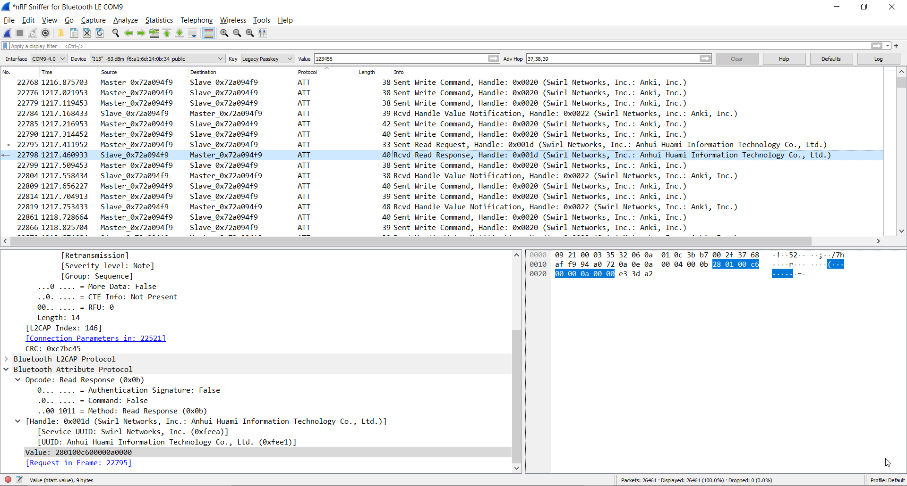
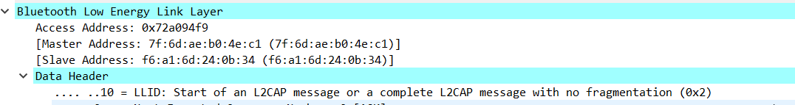
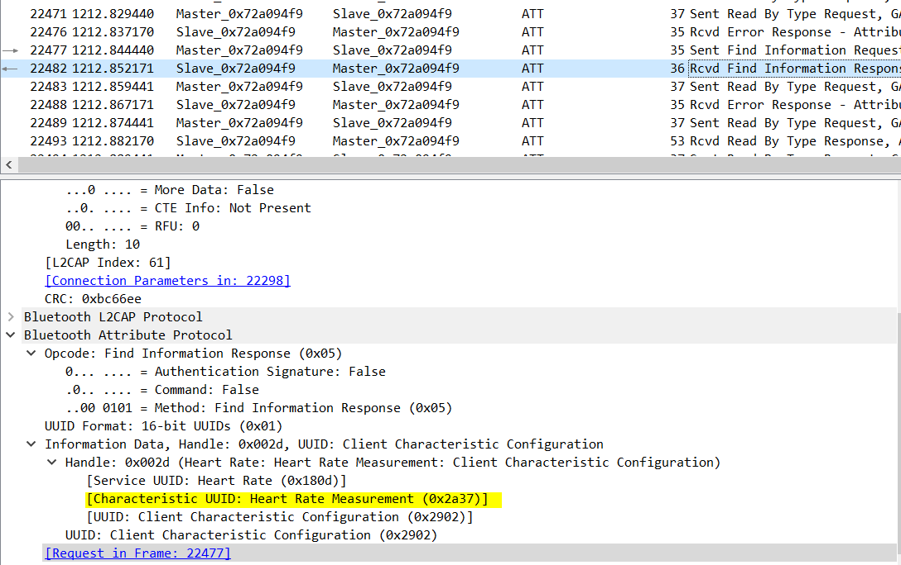

Analysing traffic captured by Wireshark
Using Wireshark we can capture the packets sent between the watch and phone. As we can see in the photo above, we have a connection, noted as "Master" and "Slave", outdated terms, but with a little investigating we are able to find the MAC address of the watch and phone, and use those to figure out which one is the Client and which is the Server.
Knowing that the watches MAC address is the one ending in 0b:34 we can see that the "Slave" is the is the server and the "Master" is the Client. When we open one of the captured packets, we see some information of interest. First, we should sort by protocol type. A lot of packets captured for BLE are broadcast packets and although they can be of some use, that's beyond the scope of this project. For BLE sniffing, what we are interested in is the "Bluetooth Low Energy Link Layer". We see a few drop down menu's that we can select from. The one we're interested in is the "Information Data, Handle" drop down. As previously mentioned, there are a standard set of UUID's that are reserved for certain characteristics.
On the watch, if we open up the Heart Rate Monitor while recording packets in Wireshark, soon we'll capture a packet that has the UUID of 0x2A37 just as in the photo below.
This confirms that we're successfully intercepting packets! Now that it's confirmed we're looking at the right Client/Server pair, we can use the nRF Connect app provided by Nordic to exploit our findings. When we open the app, we need to begin scanning again so that we can connect to the Server.

Once we connect, we're able to send and receive commands from the app. Below is a screenshot of the nRF connect app, ready to read and write data.
 Conclusion and Final Thoughts >>>
Conclusion and Final Thoughts >>>